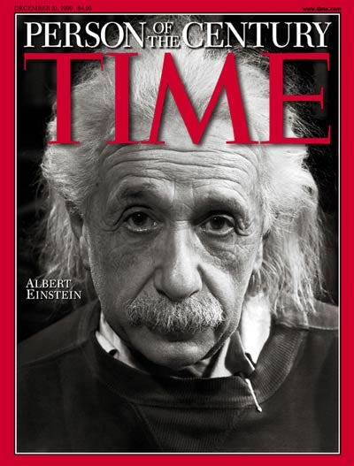
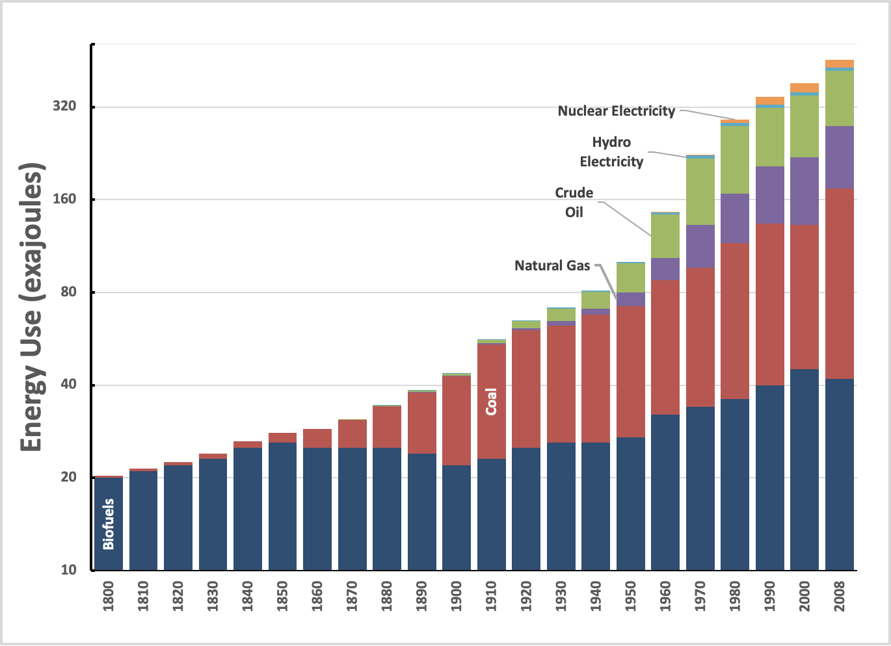
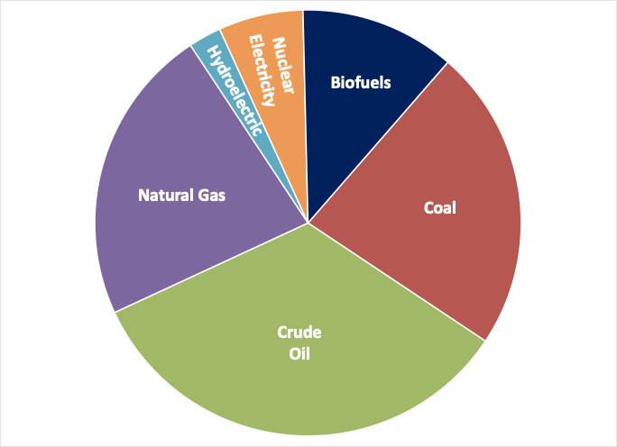

I’m Jonathan Burbaum, and this is Healing Earth with Technology: a weekly, Science-based, subscriber-supported serial. In this serial, I offer a peek behind the headlines of science, focusing (at least in the beginning) on climate change/global warming/decarbonization. I welcome comments, contributions, and discussions, particularly those that follow Deming’s caveat, “In God we trust. All others, bring data.” The subliminal objective is to open the scientific process to a broader audience so that readers can discover their own truth, not based on innuendo or ad hominem attributions but instead based on hard data and critical thought.
You can read Healing for free, and you can reach me directly by replying to this email. If someone forwarded you this email, they’re asking you to sign up. You can do that by clicking here.
Today’s read: 12 minutes.
Noteworthy: At the top of the list of COVID’s Disinformation Dozen is a Florida physician who makes money as a virulent anti-vaxxer. His business model is to lead skeptics of scientific consensus astray with cherry-picked data, executing a con game to sell books, supplements, and home remedies. It’s a profitable business model: He has accumulated over $100 million and has 3.6 million followers on various social media platforms. Based on these metrics, he’s way outperforming Dr. Anthony Fauci! [In his defense, Dr. Fauci is a government employee subject to a salary cap and stringent ethics rules.]
First, despite the credentials of the source, this is not Science. Science progresses by weighing all the data, not by cherrypicking. While scientists, like all humans, are subject to errors in perception, any true scientific error is an error in interpretation. If you’ve looked at the data and still choose to abstain from vaccination, that’s your choice. But if you haven’t looked at the data and accept an assertion that “sounds real”, then that’s not freedom, that’s blindness.
Second, I’d like to vent about the concept of “followers”. That word suggests an act of blind faith rather than the pursuit of knowledge. In case you haven’t noticed, I am not a follower. And, just because you have followers doesn’t mean that you’re a leader. ‘Nuff said.
This brings me to my point: If you’re not the follower type, I strongly encourage you to suck it up. Make it a habit to seek out, “like”, and “follow” providers of factual data (including this rag), even if you find social media deplorable. Make the artificial intelligence of the web more aware of human intelligence (emphasis mine!) and give the skeptics of scientific consensus on social media something to react to. Question skeptics about their data and assumptions, and lure them into a dialog—it’ll probably become ad hominem and anecdotal, but don’t mirror that behavior, you may learn something. Even if you’re right, such arguments only ossify the misguided, pushing them toward charlatans seeking to make a buck from misinformation.
Consider it your patriotic duty: Only about 5% of Americans actually think for themselves. The rest follow people they know or agree with. If they follow money-grubbing charlatans, then independent thinkers will simply be outnumbered. Show others by your example that you appreciate the opportunity to think for yourself while standing on a factual foundation.
Returning to the American humorist and noted plagiarist, Samuel Clemens (Mark Twain):
For today’s opener, let’s examine Twain’s opinion of scientists. In Twain’s time, true scientists (rather than inventors) were largely self-funded, well-to-do aristocrats traveling in the same social circles as their famous contemporaries. The video above is relevant: It highlights Twain’s affinity for scientific iconoclasts, including electricity pioneer Nikola Tesla (honored, of course, by the eponymous car company).
The following is an excerpt from a short essay of Twain’s called “The Bee” published in 1907, in which, tongue-in-cheek, he tries to support the notion that bees are human.
“[A]ll the great authorities are agreed in denying that the bee is a member of the human family. I do not know why they have done this, but I think it is from dishonest motives. Why, the innumerable facts brought to light by their own painstaking and exhaustive experiments prove that if there is a master fool in the world, it is the bee. That seems to settle it.
But that is the way of the scientist. He will spend thirty years in building up a mountain range of facts with the intent to prove a certain theory; then he is so happy in his achievement that as a rule, he overlooks the main chief fact of all—that his accumulation proves an entirely different thing. When you point out this miscarriage to him he does not answer your letters; when you call to convince him, the servant prevaricates and you do not get in. Scientists have odious manners, except when you prop up their theory; then you can borrow money [from] them.
To be strictly fair, I will concede that now and then one of them will answer your letter, but when they do they avoid the issue—you cannot pin them down. When I discovered that the bee was human I wrote about it to all those scientists whom I have just mentioned. For evasions, I have seen nothing to equal the answers I got.” (Emphasis mine)
While the argument is absurd, it foreshadows modern anti-Science rhetoric. Twain disparages the motives of the scientists (that’s innuendo) and then disparages their character (that’s ad hominem) while focusing on faulty logic from data (Bees are foolish. People are foolish. Therefore, bees are people). As in much of Twain’s writing, there’s a sly grain of truth to his parody—in my experience, scientists are a lot more agreeable if you share their beliefs, and money inevitably plays a pivotal role.
The story continues…
Let’s reiterate what the problem is. Stated concisely:
The increase in carbon dioxide levels in the atmosphere, attributable to human extraction and combustion of geologic carbon over 350 years of industrialization, threatens to destabilize Earth’s climates.
To solve this problem, we must somehow control the Earth’s atmosphere. Specifically, we need to adjust the amount of carbon dioxide it contains if we expect to regulate the planet’s temperature. Regardless of how you slice it, adjusting Earth’s “thermostat” will require “geoengineering”, in other words, an intentional process of applying human ingenuity (backed by Science).
What we know so far is that the problem cannot be solved piecemeal and that decarbonization, at least as far as we’ve taken it, is as effective as a rain dance.
Today’s question is:
How do scientists and engineers respond to the challenge?
Let me begin with a personal aside: I grew up with the Apollo program, believing that, no matter the question, the answer is either “technology” or “science”. Even if a technological solution is not yet possible, it just means that effort and brainpower need to be focused, and scientists and engineers will solve the problem eventually. Thus, for me, innovation is a core value, while cleverness is a core talent. It’s an important distinction that needs expansion.
Consider this possible factoid: Scientific papers, including those I’ve written, always end with (to paraphrase) “More work is needed.” The ubiquity of this conclusion can be traced to Vannevar Bush’s seminal report “Science - The Endless Frontier”. This report set the durable theme of Science in the second half of the 20th century: It is a quest for knowledge without boundaries. Moreover, this is the report that inaugurated the National Science Foundation and its descendants, firmly establishing the social good of scientific research, so it is, by definition, a landmark. Indirectly, it enabled me to pursue a career as a scientist, and it continues to drive the funding of scientists in the United States and worldwide.
While I firmly believe in applied Science's power to solve humanity’s problems, I have come to recognize flaws and limitations in the current system. Measuring the value of scientific research is imperfect at best. Academic scientists are implored to “publish or perish”, with the implication that scientists who publish are more productive (and therefore more valuable) than those who do not—Data-driven scientists have even established scoring metrics of their own (based on publications) to measure the value of their peers!1 But, it is not just a matter of productivity. To count, a publication must be a manuscript that appears in the peer-reviewed scientific literature. In other words, it’s not enough to put in long hours. The work product must meet with the approval of the social hierarchy of scientists.
Befitting such a social hierarchy, certain journals have a greater impact than others. Here, I’m talking about the “prestigious” class of journals, Science, Nature, and The New England Journal of Medicine, to name a few. The Editorial Boards of journals hold significant influence supported by groups of anonymous “peer” reviewers who are experts in the field of study. This system is not without its drawbacks. As Twain implied in the opener, scientists are people who bring all sorts of odious manners to the process, from petty grievances to serious psychological issues. Scientists can delay the pursuit of innovation—Peers can form a special echo chamber that quashes contrary ideas.
Twain’s wry characterization of scientists has a related corollary—there is economic value in publication. Peer review is also how research dollars are distributed, so what’s true of manuscripts is also true of funding. While today’s researchers don’t have the same private means as Twain’s 19th-century scientists (none I know have servants, for example), they control a lot more public money thanks to Vannevar Bush. As a result, grant applications that fail to adhere to the orthodoxy of the review panel are difficult to get funded. In turn, grant dollars are strongly correlated to favorable tenure decisions in the sciences and are the vital force behind the new work that results in publications. The result is a system of incremental advances and self-reinforcement that perpetuates the status quo. Rather than creating innovation as a public good, the usual result is symbolic support of non-specific “research” for research's sake, measured in dollars and papers. Disruptive innovation is consequently the exception rather than the rule. Instead, it tends to emerge serendipitously from an incongruous observation or iconoclastic speculation leading to an unexpected conclusion.
I’m not suggesting that we should scrap the peer review system. It’s better than the alternatives. But, if innovation is what we need, we should understand the systemic biases of who is an innovator, what constitutes innovation, and where innovation comes from. This is not a new problem—recall that Time’s Person of the 20th Century was an iconoclastic energy scientist who reconceptualized Physics!

Apparently, Albert Einstein was a brilliant but contentious student, so poorly regarded by his peers that he could not land a junior faculty position after completing his graduate studies! Instead, he was hired into the ordinarily mind-numbing job of reviewing patent applications for practicality and originality. In this context, he began to develop the theories that made his name synonymous with genius.
This has been a roundabout way to emphasize the subtle but important distinction between innovation and cleverness. Society benefits from innovation, literally, forging a new approach to a persistent problem to improve the world. But innovations are unpredictable and are only evident in hindsight. Because research dollars are not unlimited, they flow to the clever. Cleverness is short-lived, however, so the system funds clever ideas iteratively. As a result, novelty is emphasized at the expense of impact. This leaves most inventions dead on arrival, orphans that “others” must adopt while the inventor explores the next clever idea. The lack of follow-through wastes resources and delays innovation.
In the context of climate change, innovation is urgently needed, so our approach should adapt to the seriousness of the threat.2 It hasn’t. Let me point out the obvious here, that however perilous it might be to Homo sapiens, climate change is not at all like cancer—scientists and engineers have understood the fundamental atmospheric chemistry that leads to the Greenhouse Effect and global warming for more than a century.
Yet, with all this understanding, we continue to support projects that appear clever, the ones that we hope will steer humanity, at some point, away from the self-destructive habits that are setting us up for disaster. But hope isn’t a strategy.3 I assert the following: We cannot wait for a clever new technology to save the planet. Instead, to overcome the daunting challenge of durable climate change, we must adopt clearheaded strategic thinking today. While there is still plenty of room for bright ideas coming from scientists and engineers, we must be strategically deliberate if we expect to avoid the most catastrophic outcomes of climate change. The time for cleverness has passed. Instead, we must rationally employ the tools we already have in our toolbox.
Let me support those assertions with data.
The bottom line: It’s too late for cleverness to save us. We need innovation, and history teaches us that to expect innovation in the next few decades, the clever idea, the breakthrough, must have already occurred. Instead, most of our technological prowess today is focused on transitioning to “alternative energy” (the kind that doesn’t produce emissions), hoping for the improbable outcome that humans will abandon other alternatives at a large enough scale to reduce emissions to zero. Yet, because of the systemic issues in funding, that’s precisely where Earth’s problem-solving STEM talent is headed! It’s foolish to fund clever ideas that can reduce emissions if implemented yet fail to fund the implementation! That’s nearly as absurd as asserting that a bee is human.
This persistent notion also anticipates that old energy sources will no longer be used as better energy sources appear. That’s not the way it works. Consider the following (data from Bill Gates’ erstwhile energy svengali, Vaclav Smil):

I’ve plotted this in rough order of introduction and on a vertical log scale so that the growth of energy use is roughly linear with time, following human population trends. Unfortunately, this distorts the vertical axis (later additions seem less impactful). To correct for that perception, here’s a pie chart of the same data for the year 2000:

What the data says is that once humans have tapped an energy source, it never disappears. Despite all the technological innovations in energy in the last 200 years, the world uses almost twice as much biofuel as it did in 1800 and twice as much coal as it did in 1940. Based on these historical precedents, successfully developing “alternative energy sources” won’t even bend the curve of carbon emissions! [And that’s what the data says, too. See 9. Healing (Part 1). What can we do?]
If that scares you, it should.
See the h-index for one scoring system and its relevance.
In my view, the word “breakthrough” is overused. It implies that scientists and engineers only need to learn a new fact that reorients their perspective of the problem, and humanity will unleash new solutions. If only we funded more research (i.e., cleverness), the dictum continues, the funding would empower the world to develop a workable, practical solution to the problem.
Many sources for this one, ranging from Vince Lombardi and Rudy Giuliani to James Cameron, but it probably originated in the military.